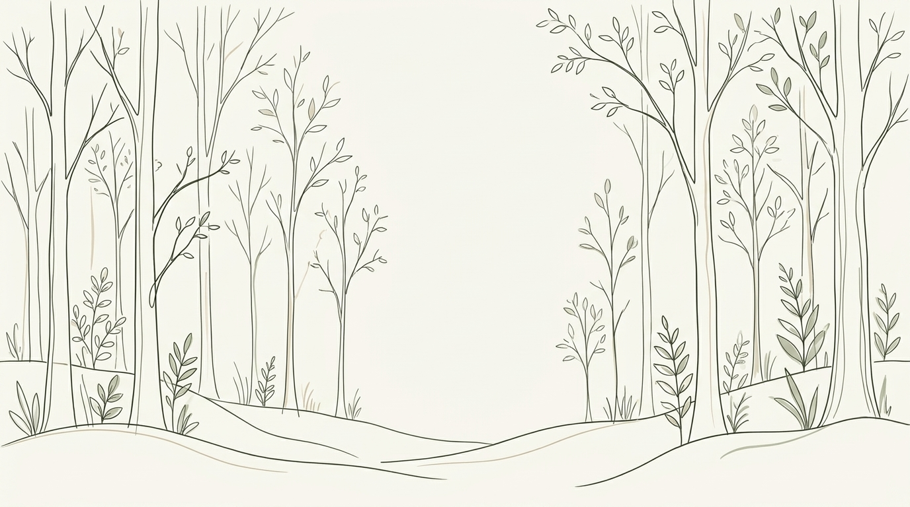
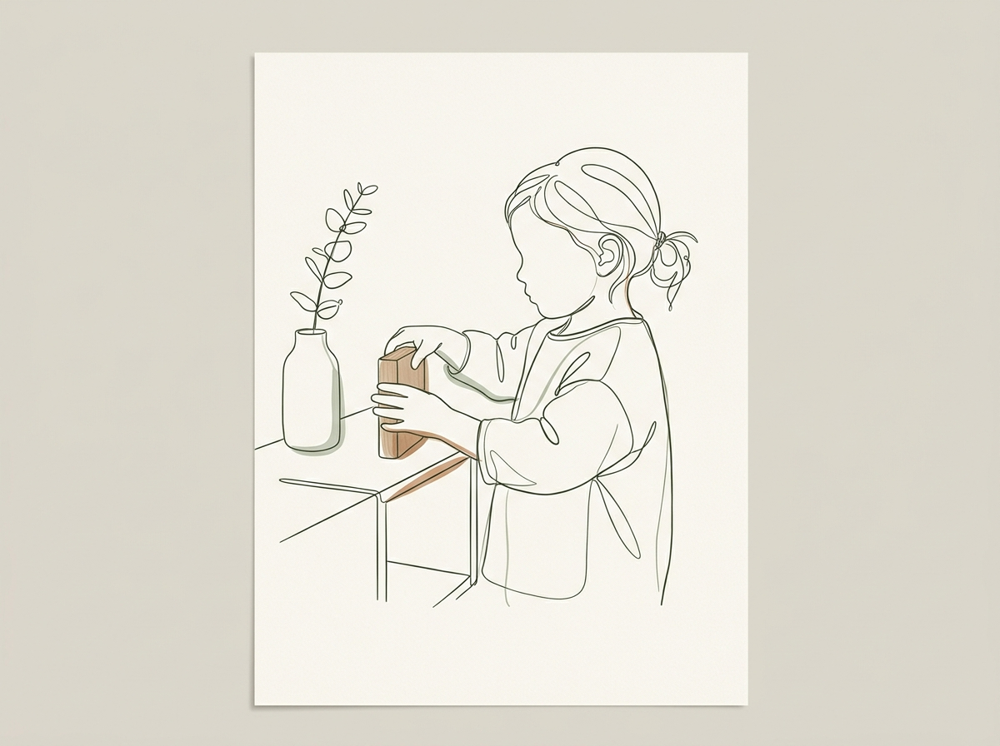
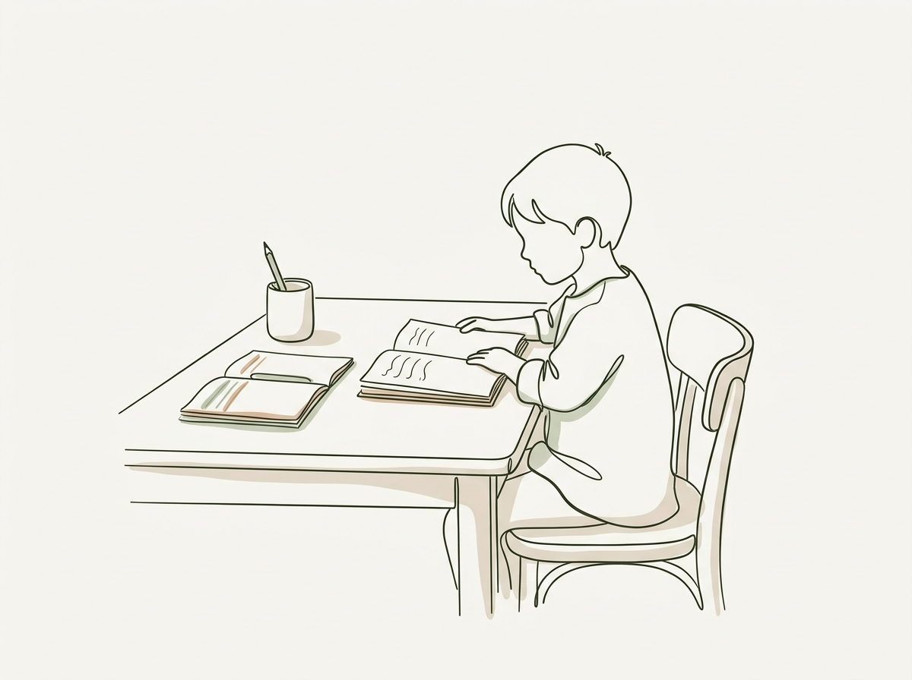
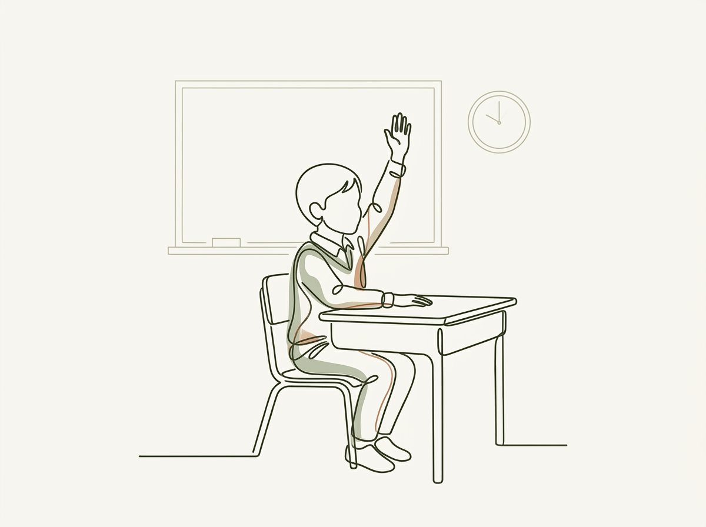
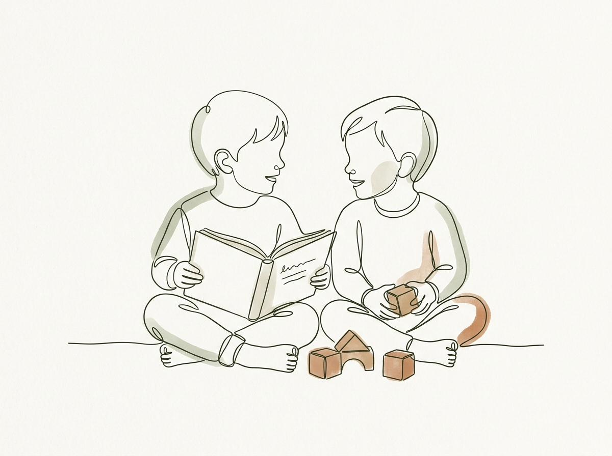

행동과학 전문기관
매일매일 습관이 모여,
스스로 살아가는
온전한 힘이 됩니다
단순한 행동 교정을 넘어, 아이의 평생을 지탱할 삶의 규칙과 사회성을
과학적 행동중재(ABA)로 단단하게 체화합니다.
아이에게 꼭 필요한 4가지 성장 습관
어려운 치료 용어 대신, 아이가 스스로 살아갈 힘이 되는 일상과 교실의 구체적인 변화입니다.

스스로 정돈하는 자립 습관
열 번 말하지 않아도 자기 물건을 제자리에 척척 분류하고 스스로 챙기는 아침 루틴을 형성합니다.

차분하게 몰입하는 공부 습관
방해 자극 속에서도 스스로 책상에 앉아 과제를 끝까지 완수하는 집중력과 성취감을 기릅니다.

학교 생활과 교실 규칙
초등 모의 교실 환경에서 선생님 말씀에 귀 기울이고 차례를 지키는 단체 생활 규칙을 체득합니다.

양보하고 소통하는 또래 사회성
친구의 표정과 상황을 읽고 기분 좋게 양보하며 갈등을 대화로 푸는 사회적 기술을 익힙니다.
체계적인 근거 중심 발달 솔루션
주관적 판단이 아닌 검증된 행동과학 데이터와 임상 전문가 슈퍼비전으로 함께합니다.
치료사 양성 & 공인 보수교육
2년 도제식 피라미드 수련으로 치료사진을 직접 양성하며, 미국 BACB 공인 공식 보수교육(ACE Provider) 기관으로 지정되었습니다.
정밀 발달평가
대학병원급 표준화 검사와 행동 관찰 데이터를 통해 아이의 발달 수준과 기질을 다각도로 정밀 진단합니다.
학교생활 연계
5년 연속 축적된 학교준비반 노하우로 초등 입학 후 규칙 이해, 착석, 또래 관계 적응을 사전에 체계화합니다.
소아정신과 자문 연계
소아청소년정신과 전문의 정기 케이스 자문 및 의료 협력 시스템을 통해 전문적인 다각도 케어를 지원합니다.
데이터 기반의 3단계 맞춤 케어 로드맵
객관적인 진단에서 출발하여 실제 일상과 학교로 확장되는 변화를 만듭니다.
객관적 정량 진단
아이의 언어, 인지, 감각, 행동 발달 수준을 표준화 척도로 정밀 측정하고 강점과 보완점을 파악합니다.
과학적 1:1 맞춤 중재
ABA 행동분석과 전문 치료 영역을 융합하여 핵심 언어 촉진 및 자율적 대체행동을 집중 형성합니다.
학교 및 일상 일반화
치료실에 머물지 않고 모의 교실과 소그룹 활동, 가정 연계 코칭을 통해 실제 생활 속 독립을 완성합니다.
아이의 안전과 성장을 배려한 전문 치료 공간
하남미사 본원 4층, 임상 치료사진이 직접 아이들의 눈높이에 맞추어 설계한 실제 치료실 내부를 둘러보세요.
 🌿 로비 스테이션
🌿 로비 스테이션
인포메이션 스테이션 & 시그니처 벽나무
원목 벽나무 조형과 부드러운 라운드 곡선 벽면으로 아이와 부모님께 심리적 안정감을 선사합니다.
 🏫 학교준비반 모의 교실
🏫 학교준비반 모의 교실
예비초등 학교준비반 모의 교실
눈의 피로를 덜어주는 저반사 높이조절 초등 책걸상으로 실전 학교 적응 훈련을 진행합니다.
 🎬 시청각 모의 환경
🎬 시청각 모의 환경
듀얼 대형 칠판 & 시청각 빔프로젝터
정면·측면 2개 칠판과 빔 스크린을 통해 개별 집중 및 원형 둘러앉기 등 다채로운 수업을 지원합니다.
 🚰 자조기술(ADL) 훈련
🚰 자조기술(ADL) 훈련
화상 방지 안전 수전 & 세면 자조실
아이 눈높이에 맞춘 세면대와 급작스러운 고온 방지 안전 설계로 손씻기·양치 독립 루틴을 익힙니다.
 🛡️ 안전 & 방음벽 풀시공
🛡️ 안전 & 방음벽 풀시공
안전 쿠션 폼 & 방음 흡음재 풀시공
하부 충격 방지 안전 패딩과 상부 전면 방음 흡음재를 둘러 부상 걱정 없이 몰입할 수 있습니다.
 🤝 소그룹 사회기술실
🤝 소그룹 사회기술실
2~3인 짝치료 & 소그룹 사회기술실
또래 간의 자연스러운 눈 맞춤과 규칙 공유, 양보 협상을 안전하게 연습하는 맞춤형 공간입니다.
아카데미 이용 절차 & 자주 묻는 질문
대기 순서의 공정성을 위해 전화 신청은 받지 않으며, 구글 폼 온라인 신청서로만 순차 접수됩니다.
구글 폼 신청서 작성
스마트폰이나 PC로 아이의 기본 정보와 주요 고민을 입력하여 간편하게 접수합니다 (1분 소요).
심층 유선 상담 & 일정 조율
제출해주신 발달 히스토리를 꼼꼼히 사전 분석한 후 담당 연구진이 순차적으로 개별 연락을 드립니다.
1:1 심층 평가 & 맞춤 솔루션
센터 방문을 통해 아동 초기 발달평가를 진행하고, 가장 효과적인 프로그램(ABA·학교준비·소그룹)을 배정합니다.
온라인 구글 폼으로 간편하게 신청하세요
전화 신청 시 발생할 수 있는 누락이나 순서 혼선을 방지하기 위해 구글 폼으로만 신청을 받습니다.
접수 즉시 데이터에 초 단위로 기록되어 가장 공정하게 순차 연락을 드립니다.
자문의 상담 & 이용 Q&A
궁금하신 질문을 누르시면 상세한 답변을 확인하실 수 있습니다.
연세나무 소아청소년정신건강의학과는 병원이고, YT 심리발달 아카데미는 독립된 법인 상담·발달 전문기관입니다. 서로 독립된 법인이지만, 아이들을 진료실과 치료실에서 함께 깊이 있게 관찰하고 돕는 긴밀한 협력 관계입니다.
연세나무에서 진료를 보며 아카데미에서 치료를 진행하는 아동의 경우, 의사와 치료사진이 실시간으로 소통하며 아이의 치료 경과를 함께 고민합니다.
문의가 집중되는 시간대에 전화 접수를 받을 경우 신청 순서 누락이나 기록 오류가 발생할 수 있습니다.
온라인 구글 폼으로 접수해 주시면 제출 일시가 초 단위로 공정하게 기록되어, 대기 순번을 가장 투명하게 보장해 드릴 수 있습니다.
신청서가 접수되면 원장단과 전문 연구진이 아동의 발달 히스토리를 꼼꼼히 사전 검토합니다. 보통 영업일 기준 2~5일 이내에 순차적으로 유선 연락을 드려 초기 상담 일정을 조율해 드립니다.
아카데미 프로그램을 이용 중인 아동에 한하여 담당 치료사의 케이스 기록을 바탕으로 소아정신과 전문의 정기 자문 미팅이 진행됩니다. 의학적 소견과 행동 치료 전략을 통합하여 부모님께 안내해 드립니다.
취학 전 해인 6~7세 가을 학기부터 겨울 방학까지가 가장 골든타임입니다. 실제 학교 입학 3~6개월 전에 모의 교실 착석과 단체 지시이행을 연습해 두면, 입학 초기 겪을 수 있는 분리불안과 학교 부적응을 크게 예방할 수 있습니다.